대한민국 경험 아카이브 구축
다양한 세대의 경험을 체계적으로 수집하고 보존합니다.
 FCI 홈
FCI 홈
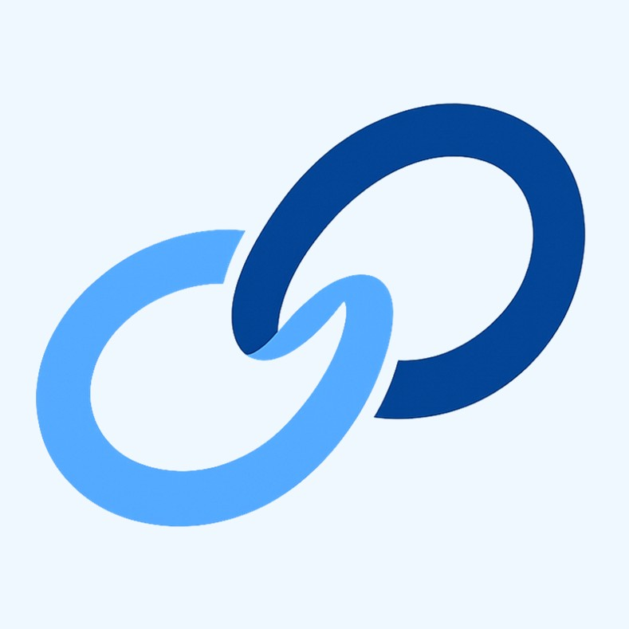
궁금한 제목을 눌러 8개의 질문으로 Paran을 열어보세요.
많은 돈과 높은 지위, 명예가 정말 성공일까요?
그것만 있으면 정말 행복할까요?
퇴직 후 가족과 친지, 지인들과 화목하게 살아갈 수 있다면, 그것이 진짜 성공이 아닐까요?
그렇다면 이미 그런 일상의 성공을 이루신 분들은 과연 어떤 일을 하며 살아오셨을까요?
그분들의 경험을 배울 수 있다면, 우리도 그런 일상의 성공을 할 수 있지 않을까요?
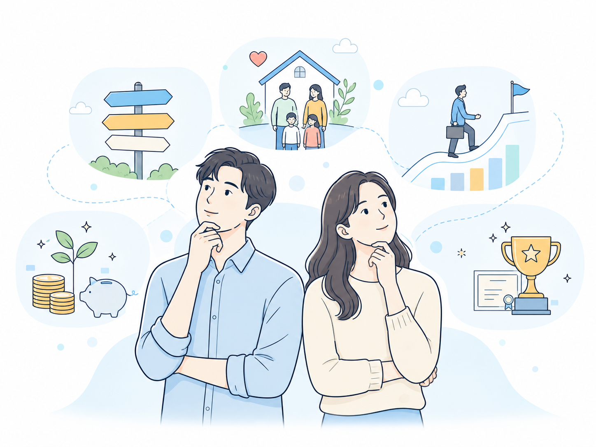
우리는 세상의 삶을 얼마나 알고 있을까요?
우리가 아는 삶은 주변 사람들의 삶과 매체 속에 나오는 삶 정도가 아닐까요?
저 수많은 건물 안에서 사람들은 어떤 일을 하며 살아가고 있을까요?
우리는 진로와 삶의 방향을 선택할 때 얼마나 다양한 삶을 보고 결정하고 있을까요?
만약 더 많은 사람들의 실제 경험을 만날 수 있다면, 우리의 선택도 달라질 수 있지 않을까요?
다른 사람들의 삶이 우리의 작은 길잡이가 될 수 있지 않을까요?
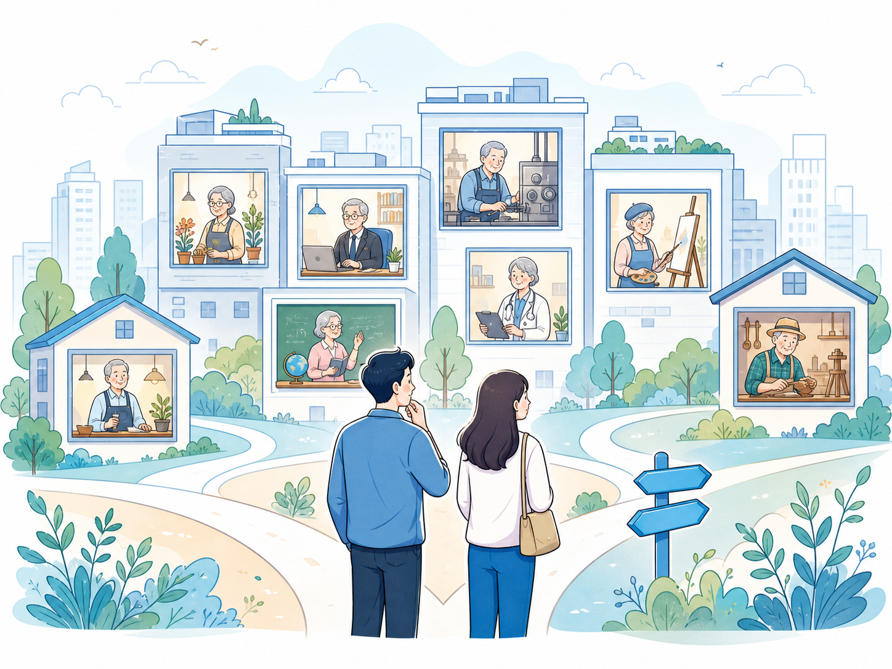
[파란 : 그분들의 이야기]는
시니어분들이 파란만장했던 과거의 경험을 남기고,
행복의 파란새인 오늘의 일상을 한 장의 사진으로 나누는 세대공감 스토리 플랫폼입니다.
그리고, 주니어분들이 그 속에서 자신만의 미래를 위한 파란 신호등을 찾고,
언젠가는 자신의 인생 경험을 이어서 남기는 경험과 지혜 축적 플랫폼입니다.
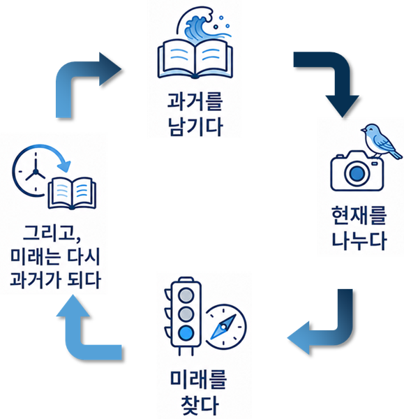
과거의 경험은 미래로 넘겨줄 수 있는 자산입니다.
파란에서는 30대, 40대, 50대처럼 삶의 시기별로 어떤 일을 했고, 어떻게 그 일을 하게 되었으며, 어떤 위기와 기회를 만났는지를 남길 수 있습니다.
삶과 경험은 5가지 카테고리로 나누어 키워드와 1,000글자 이내의 이야기로 정리할 수 있고, 텍스트 입력, AI 음성대화, 컴퓨터 작성 등 편한 방식으로 시작할 수 있습니다.
더 남기고 싶은 이야기는 “그리고, 더 많은 이야기”에 자유롭게 확장하고, 기존 개인 블로그를 연결할 수도 있습니다.
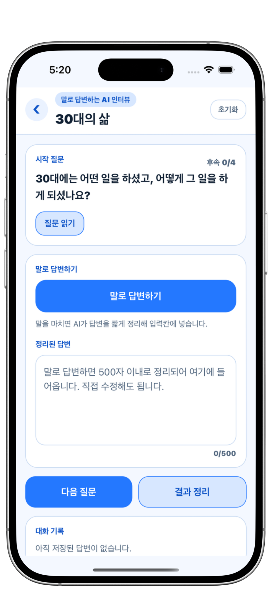
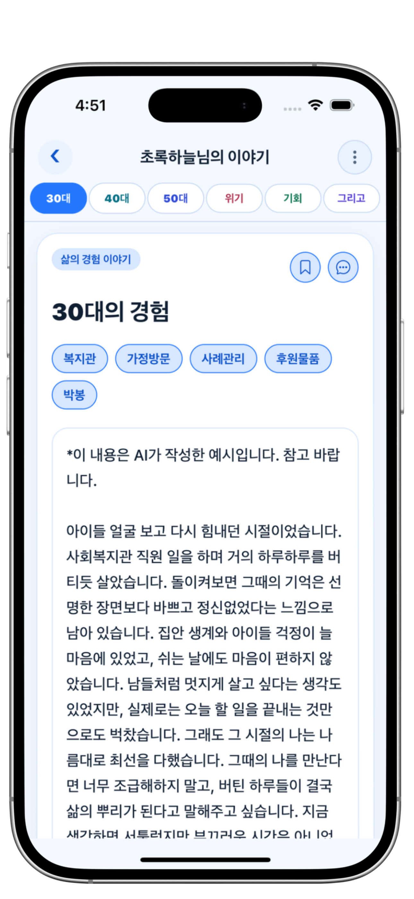
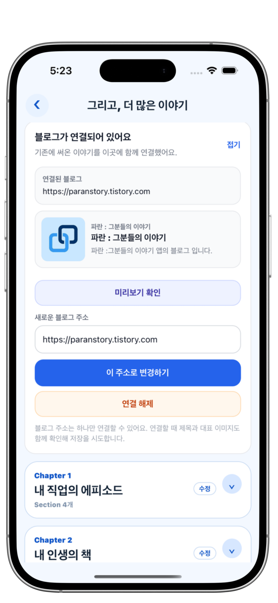
내일이었지만 어제가 될 오늘을, 한 장의 사진으로 나누어 보세요.
산책 중에 만난 거리의 꽃, 하늘의 구름, 커피 한 잔, 언덕 위의 풍경, 멋있는 석양, 맛있는 반찬처럼 특별하지 않아 보이는 일상 사진 하나.
행복의 파란새는 바로 그런 일상 속에 있습니다.
지인들과 서로의 일상 사진을 보며 간단한 안부와 공감을 나누어 보는 것은 어떨까요?
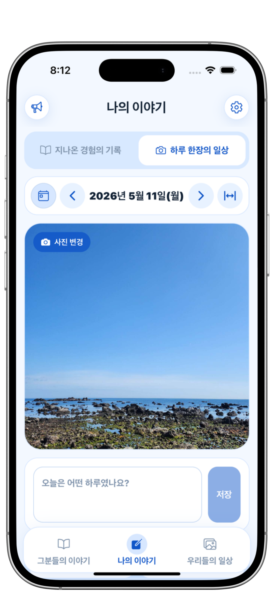
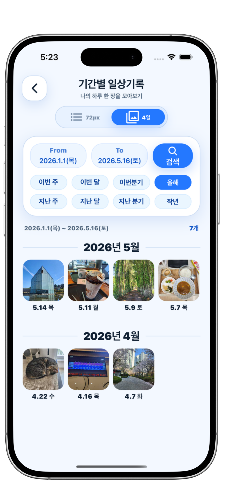
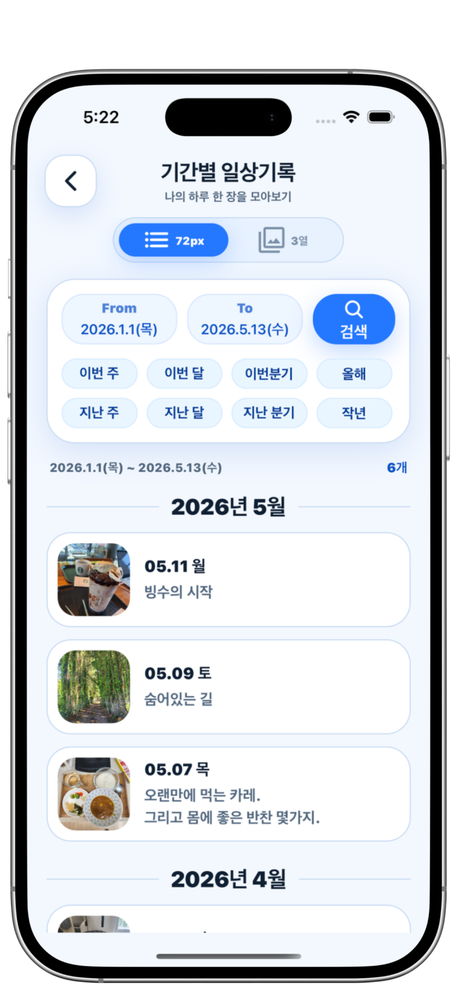
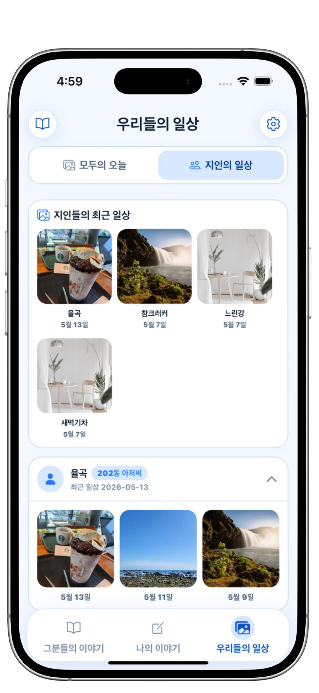
내가 가보지 못한 길, 지금 고민하고 있는 길, 나와 비슷한 길을 먼저 걸어가셨던 분들의 이야기를 찾아보세요.
이미 그 길을 지나온 뒤, 오늘은 화목한 일상을 살아가고 계신 분들의 다양한 경험 속에서
당신만의 파란 신호등을 찾을 수 있습니다.
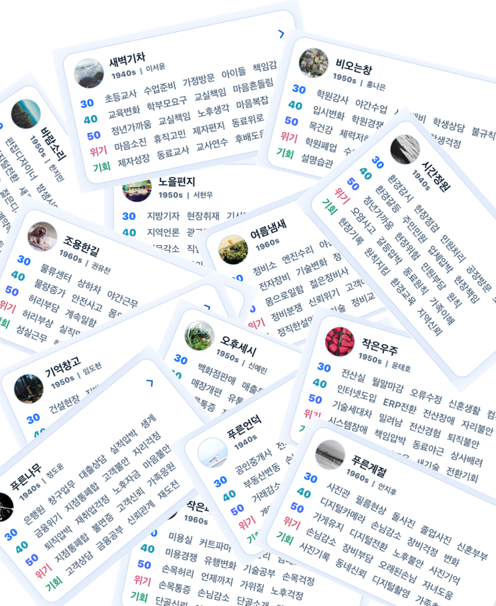
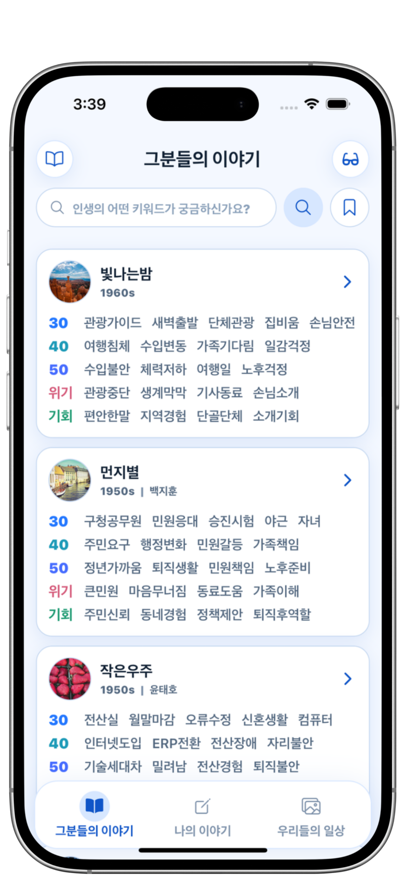
파란은 단순한 SNS가 아닙니다. 사람들의 경험을 보존하고 세대를 연결하는 경험 아카이브 플랫폼의 표준을 목표로 합니다.
다양한 세대의 경험을 체계적으로 수집하고 보존합니다.
AI가 경험을 이해하고 연결해 필요한 이야기를 찾도록 돕습니다.
고령사회 국가의 다양한 경험을 연결하는 기반으로 확장합니다.
세대와 국경을 넘어 경험이 자산이 되는 플랫폼을 꿈꿉니다.